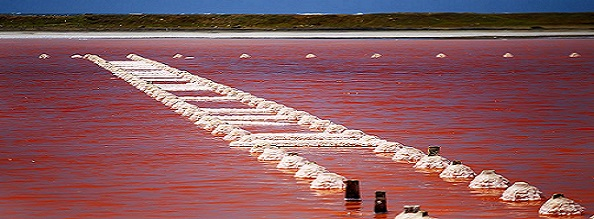

En este espectáculo visual, el color es producido por microorganismos que se encuentran en aguas saturadas de sal. Al llegar, da la sensación de estar soñando, pero al observar de cerca nos damos cuenta de que en esta hermosa realidad las puestas del sol son maravillosas y alucinantes, y los tonos rosa son intensos y maravillosos. Es un escenario de fotografías memorables e ideal para respirar aire puro.


La época para realizar este plan ecoturístico en Galerazamba es de diciembre a abril. Después, empieza a bajar la tonalidad rosada hasta convertirse en cristalina. De igual forma, en cualquier mes se disfruta de este gran complejo de explotación de sal, mientras se tiene el privilegio de conocer el proceso físico-químico, así como su historia, proceso de cristalización, su uso y comercialización.
© 2019 por Irma Lorena Vélez Pérez ©